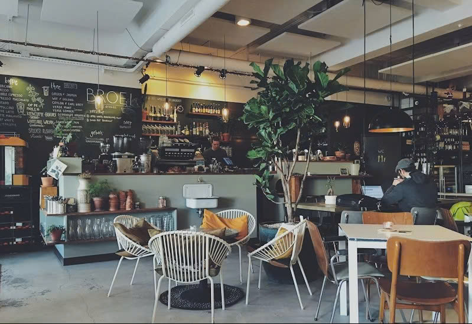

Trang chủ › Giới thiệu

Giữa nhịp sống hối hả của thành phố Trà Vinh hiện đại, 1985 Café ra đời như một khoảng lặng bình yên, nơi đưa bạn trở về với những ký ức xưa cũ của thập niên 80 - 90.
Tọa lạc tại con đường Phạm Ngũ Lão rợp bóng cây xanh, quán giữ trọn nét hoài cổ với mảng tường gạch thô mộc, bộ bàn ghế gỗ màu trầm nhuốm màu thời gian và những chiếc đài radio, máy quay đĩa cổ cassette quen thuộc.
Hãy ghé thăm chúng tôi để tự mình cảm nhận không gian yên bình và thưởng thức những ly cà phê đơm đầy ký ức.